| <<< PREV | NEXT >>> |
Such PerlinNoise objects allow to obtain pseudo-random, coherent noise values for a number of inputs (“dimensions”). We will go over what this means and what are the implications of it for particle effects in this chapter.
Up to this point, when dealing with particle motion, the particles we have worked on were moving in a predictable trajectory through XYZ space, either through initial velocity set in the init function or by having the velocity modified in the update function instead. Even if the particles follow a target that is changing position, we are still able to predict where the particle is heading.
Such simple trajectories certainly have many applications, but they don’t always seem “natural”. In many real-life phenomena, objects take a non-trivial, complex, even seemingly “random” trajectory, especially when you take into account factors such as wind, water current, convection, turbulence, or some life-like, organic sense of motion. Simply moving in a line from point A to point B is not adequate to mimic such complex motion and looks somewhat artificial. We would need to add this element of apparent “randomness” somehow.
Speaking of randomness, we have used random values countless times already. The randomInt() or randomFloat() functions generated a random value between a certain min/max interval which we could use for pretty much anything. This works great for giving particles a random initial velocity, size, color, so on and so forth. Notice the use of the word “initial”, suggesting the init function. If we used the random number functions in init functions, maybe we could just as well utilize them in update functions to give particles random motion? Let’s give it a try by assigning a random velocity to a particle in the update with a particle effect of your choosing (no, really, create one yourself… oh come on, you should be more than capable to script your own this far into the tutorials!):
Before I reveal these special noise functions, let’s discuss again what makes our initial attempt with random values applied directly to velocity look so terrible. The changes from frame to frame are too abrupt and there does not seem to be any correlation between the random value we had the frame before and the random value we have now (a lack of coherence between adjacent noise values).
This time, let’s take a graphical approach to visualizing this issue. Below is a bitmap image created by generating a random integer between 0 and 255 (equivalent to randomInt(0, 255)) for every pixel and using that integer as the grayscale RGB value of the pixel. We obtain a “noisy” looking image as a result, visually very similar to the aforementioned black and white TV static:
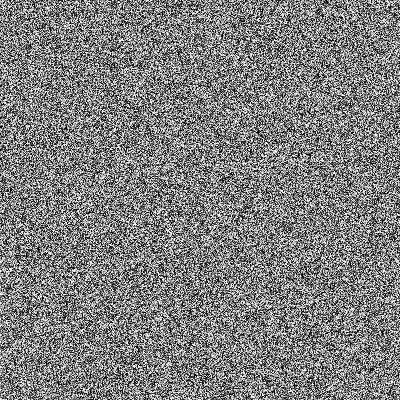
Figure 1. Noise created by using random integers 0-255 as grayscale values per each pixel.
Looking at this stunning piece of art, we see that the values are indeed quite random. But random in a very abrupt way, jumping erratically between extremes like (3, 3, 3) and (250, 250, 250) from pixel to pixel. We can see this more clearly on a small fragment of the above image, enlarged 16-fold:
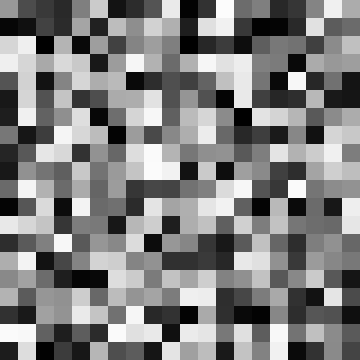
That’s what is meant by the randomness not being coherent (it’s a bit “too random”, in a sense). On top of that, if we were to generate the same image again, with the same inputs for x and y pixels, we would get a different noise layout, most likely. This is due to the fact that the pseudo-random number generator (which randomInt() and randomFloat() functions are based on) has something know as a state. This state means that you can generate numbers for a very long time before you get end up repeating numbers (a trait that is often desireable), but it also means that you cannot reproduce the specific “random” arrangements from the image easily, unless you cycle through all of the numbers and end up back at the start. Meanwhile, it would be nice if for an exact input, you get an exact, predicted output.
What we would need here is a different random number function, with results that appear random if you zoom out, but if you look up close, you will see gradual, smooth shifts between one extreme and the next, and does not depend on any “state”. Something that would look more like…
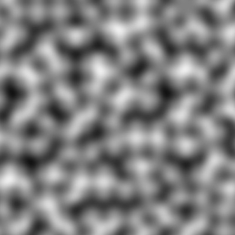
Figure 2. Noise generated by using a 2D Perlin noise function on each pixel.
“That looks neat! What’s this mysterious random number function that gives such random-but-smooth results?” - you may be asking.
Here’s the answer: Perlin noise.
“…what the hell is even that?!”
It’s a technique of generating random-looking, coherent (i.e. smooth) noise, developed in the 1980’s by a guy named Ken Perlin. He’s a computer scientist working in the field of procedural generation (and more generally in computer graphics). He developed this form of noise as a way of addressing the exact problem of the usual random noise not being coherent (“changing too abruptly”). The noise he invented looks smooth and coherent on a small scale, but appears random on a larger scale. In most applications, the noise output is not used directly as-is, but it’s layered upon itself at smaller and smaller granularities until you get a texture that resembles clouds or smoke (you’ve likely seen it before):
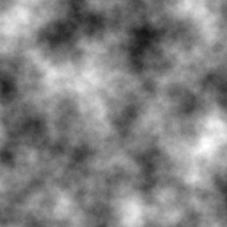 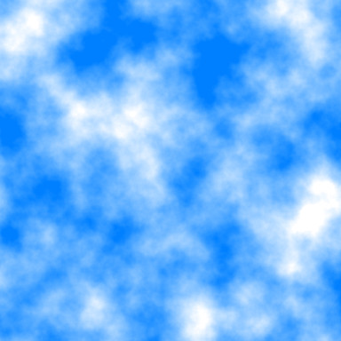
Figure 3. Layered perlin noise (left) and a primitive sky texture made from it (right).
Interestingly, this technique was so impactful, that Perlin himself received an Academy Award (aka “an Oscar”) in the technical achievements category for inventing it. Since then, it was widely adopted and remains an omnipresent staple in computer generated imagery (CGI) in the film, video game, graphics and visual effects industries to this day.
Alright, I will not bore you with the history of Perlin noise any further and I’ll spare you the details of how it is generated. But I do want to describe how it works on a surface level, which is very useful to know.
When I was generating the 2D bitmap image above (Figure 2), I used a 2D Perlin noise function. This function expects two inputs: an X and a Y, for which we pass the (X, Y) of the given pixel (optionally scaling these X, Y values by some amount). The function then takes those pixel coordinates and spits out some float number between -1 and 1 (approximately). To convert this to a grayscale RGB value, we multiply by 127 and add 128 (effectively remap the output value range to fit between 0 - 255). And voila, this is how the above images demonstrating the Perlin noise were made. Here is some pseudo-code demonstrating this process:
for pixel in image do:
local value = Perlin2D(pixel.x * 0.02, pixel.y * 0.02) -- call noise function and get output for given X and Y
value = value * 127 + 128 -- remap value to 0 - 255 range
pixel.color = createColor(value, value, value) -- assign uniform grayscale RGB value
end
The crucial distinction between this Perlin noise function and something like randomFloat() or randomInt() is that unlike the latter, for the same X and Y input coordinates, you will always get the same output value, no matter how many times you call the function. This means that Perlin noise is merely pseudo-random (technically speaking, the random number functions are also pseudo-random, but it’s not worth opening that can of worms to discuss it). This pseudo-random aspect addresses the drawback in the first point of the random accel technique, where particles with the same position could end up travelling a different path.
What about the second point - the “jumpiness”? It also addresses this problem fairly well. You can observe on the image (Figure 2) that nearby X and Y obtain comparable values, making adjacent pixels receive similar (though gradually changing) values. Even though it is (pseudo)random in appearance, it tries to maintain an overall consistent frequency of oscillations between the positive values (brighter pixels) and the negative ones (darker pixels) and alternates between them very smoothly.
While Perlin noise is most often used in the creation of textures, terrain maps and the like, we can also use it simply for the “predictable randomness” it gives. That’s how we will use it in the context of particles, anyway.
An implementation of Perlin noise is available in the Particle Scripting API, but you cannot just call a single PerlinNoise() function like with randomInt() and randomFloat(). Instead, you must create a PerlinNoise object inside the script. Once this object is created, you have access to noise generation functions owned by the object. You may wonder: why is creating an object before calling the functions even necessary, it seems like this just adds extra steps for nothing?
The reason is that there is not just one single Perlin noise object possible, but there can be countless many versions of it. You see, the noise objects can be generated with a seed value (some integer number) which determines what kind of randomized output you get when calling its noise functions. This result will be consistent and repeatable for the same seed, but will differ with other seeds (are you familiar with games like MineCraft? This is the exact same seed value we’re talking about, because MineCraft uses modified Perlin noise for its procedural world generation algorithm). If you don’t like the appearance of one particular seed, you can try out a different one to get results which you like more, with nearly infinite possibilities.
But back to the noise functions:
We have mentioned earlier that we generated the image representation of Perlin noise with a 2D noise function. Does that mean we can have a 1D noise function or 3D one? Indeed, but I need to make sure we understand each other when I say that the function is 1D, 2D or 3D.
The number of “dimensions” in each case relates to the number of inputs given to the function, but there is always one single output for any number of “dimensions”, a floating point number roughly between -1.0 and 1.0 (the exact output range is more complicated, but I won’t get into it). When we were generating the bitmap images with the 2D function, these two inputs happened to be the X and Y of each pixel, and the output was a single float we used to get the grayscale RGB color of the pixel. To reiterate, it’s only about how many inputs we pass to the noise function, each input being a “dimension” for the generated noise. The result, however, is always a single float value.
It might not seem clear why we would need this odd “multidimensionality”. But I will try to answer in the best way I can, by providing some examples:
To demonstrate the usage of Perlin noise, we will use it to modify various particle properties in update, using different input parameters for the “dimensions” of Perlin noise. This should result in the particles exhibiting “dynamic randomness” with their properties. We can reuse the particle effect with the randomVelocity() function from before, but we will need to make some changes in not just the update function, but whole script.
Firstly, we need to construct a PerlinNoise object in our script. This is done through the API function createPerlinNoise(). It returns, yes, a PerlinNoise object, which we may assign to a variable for later use. Similarly to groups, you can only create new noise objects in an outer scope (outside of init or update functions). Creating them inside init or update functions is forbidden (you will receive an appropriate error message when trying to do so, anyway).
The createPerlinNoise() function takes either no arguments or optionally one argument, the integer seed value.
local perlin1 = createPerlinNoise() -- default noise object
local perlin2 = createPerlinNoise(654321) -- noise object with randomizing seed value
When it is called with no arguments, a default PerlinNoise object is constructed, using Ken Perlin’s original setup for this object. When you pass a seed value though, this seed will be used for the setup of the object. Different seed values will result in the noise giving slightly different outputs (this will be especially noticeable when using the noise on velocity, as we will discover later).
Assuming we are working with the same particle effect we made earlier, let’s create a noise object above the update function, with or without a custom seed value:
local perlin = createPerlinNoise()
local function randomVelocity(part)
-- code
end
And now we have a PerlinNoise object, assigned to the perlin variable, which we can use in our script.
Once we create our noise object, we can later use it inside init or update functions to generate noise values. Generating these noise values is accomplished by “calling” the object with the input values for the noise it is supposed to generate. As mentioned above, the noise functions exist in a few “dimensional” variants, from 1D to 4D. You must therefore pass the inputs to the PerlinNoise object in parenthesis, as if it were a function. We have not encountered this peculiar syntax yet, but it should be rather easy to get behind with a few examples. Given that we have placed our noise object in the variable perlin, “calling” the object is accomplished like this:
perlin(scale, input1) -- 1D noise, based on input1
perlin(scale, input1, input2) -- 2D noise, based on input1 and input2
perlin(scale, input1, input2, input3) -- 3D noise, based on input1, input2 and input3
perlin(scale, input1, input2, input3, input4) -- 4D noise, based on input1, input2, input3 and input4
I need to explain the additional argument appearing in each of the above calls, the scale factor. This value is not one of the input coordinates for the noise, but rather it is used to scale the input coordinates. This controls the “granularity” of the noise output. To make this clearer, examine the following images:
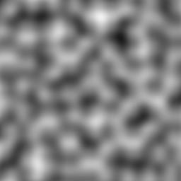 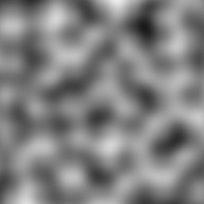 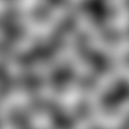
Can you tell that it’s the same noise pattern on each image, just zoomed in more and more? This is exactly what the scale factor does in the noise functions. Its job is to increase or decrease the frequency of the noise undulations (the “blobs”). It is inversely proportional to the frequency, but directly proportional to the size of the “blobs”. Thus, larger values mean lower frequencies (and larger “blobs”), while smaller values mean higher frequencies (smaller “blobs”). The scale value also vaguely corresponds to TR world units, meaning a scale factor of 1024 will result in “blobs” of roughly 1024 units (or 1 square) in diameter. It’s tricky to get an intuition of what scale value to use at first. As you work more with it, however, you will develop a “feel” for this sense of scale in the noise.
Alright, time to quit the chit-chat and get back scripting. To reassume, By using the “3D” version of the noise function, we can translate the particle’s movement in the XYZ space to a random change in the particle’s size, for example. We will call the noise3D() function, passing the noise object and the particle’s X, Y, Z coordinates. We’ll obtain a noise value roughly between -1.0 and 1.0, which we will transform with simple multiplication and addition to a value suitable for the sizeCust property.
. While we have not encountered functions that belong to objects yet, it should be rather straightforward to get behind. You simply index the object (stored by the perlin variable in our case) with the function’s name, like so:
perlin(scale, input1, input2, input3) -- call the 3D noise function belonging to the PerlinNoise object
We will then pass the arguments required by the noise3D() function in parentheses, as usual. These arguments are as following: the scale factor (we will use 256), then particle’s X position, Y position and Z position.
Let’s assign the result of calling this function to the aptly named noise variable and rename our randomVelocity() update function to a more suitable name, e.g. randomSize():
local function randomSize(part)
local noise = perlin.noise3D(256, part.pos.x, part.pos.y, part.pos.z)
end
Now that we have the output value stored in noise, we can do some further modifications to it. The output range of 3D noise never exceeds the -1 to 1 interval and usually falls short of either end. With this in mind, we can come up with a formula to rescale the value in noise, so we can apply it to the sizeCust property. As a start, we will multiply the value by a number so its span is wider than the supposed -1 to 1 range. Let’s go with 30, maybe?
local noise = perlin.noise3D(256, part.pos.x, part.pos.y, part.pos.z) * 30
We now should have a value approximately between -30 to 30. Obviously, size can’t be negative, so we must add to this a number that will guarantee it never reaches the negatives. 50 should do the trick, I think!
local noise = perlin.noise3D(256, part.pos.x, part.pos.y, part.pos.z) * 30 + 50
Right, one last thing to do now is assign the value of noise to sizeCust. Though the noise value is float, is it a problem to assign this to sizeCust? Not really, the Lua-to-Plugin interface will truncate floating point values when it needs an integer input. For example, if the value the integer property receives is something like 43.6051, this value gets turned into 43. So we can go ahead and assign noise directly to sizeCust, without worrying about converting it to an integer first. However, if we want to be extra safe, we can wrap noise in a round() call before finally assigning it to sizeCust:
local function randomSize(part)
local noise = perlin.noise3D(256, part.pos.x, part.pos.y, part.pos.z) * 30 + 50
part.sizeCust = round(noise)
end
Now all that’s left is to test it out ingame!
The result should be random, but smooth fluctuations in the size of the particles, exactly as we intended!
I’ll show another example of using noise, this time with particle color. I already mentioned that we can take different approaches to this topic. One of which would be generating separate noise values for each color channel (R, G, B), remapping them into the 0 to 255 range and assining the results to the r, g, b of colCust. It will indeed result in smooth fluctuations of color:
You can notice something about this method for randomizing color, that sometimes we end up nearly invisible particles (if using additive or subtractive blending, that is) or grey-ish, unsaturated colors, among the vibrant hues. I’m not in the position to judge whether this is a good or a bad thing, I’ll leave that up for you to decide. Though perhaps this is not what we want, we would prefer the colors to remain at a constant saturation or brightness level, only changing in hue. You know what function I’m about to name-drop, right? Let’s say it together: colorFromHSL()! This function allows finer control over the hue, saturation level and brightness of a color and is thus suitable for what we would like to do now.
The principle is very simple, we get a noise value, transform it and pass it as the hue argument to colorFromHSL(). You can make the noise depend on whatever inputs you like, but in this example I’ll use 3D noise again with XYZ coordinates of the particle. To remap the noise into a suitable interval, we could place it into the 0 to 360 value range. But because hue is allowed to wrap around to the 0 to 360 interval, we don’t need to be pendantic about making sure the noise value we’re passing fits within that interval. However, I will highlight that what we multiply the noise value by will decide the effective “range” of possible hues, while what we add to the noise will decide which hue the noise will “oscillate” around, if that makes sense. We will see this in action with the next few examples:
Right, we used the Perlin noise to make some particle parameters, like size or color, randomly flucuate within a certain interval, neat! But what about the vector properties, notably velocity? Didn’t we start out this whole chapter with the intent of making particles move in a random way?
Don’t worry, that’s still our objective and we will accomplish it in this chapter. I deliberately avoided modifying velocity in the examples above, because when using noise to influence velocity, there are a few surprising pitfalls you can encounter. This makes the topic a lot less trivial than it would seem at first glance, which warrants covering this matter in a section of its own.
We will now talk about using noise to modify particle velocity (and by extention, acceleration). Unlike modifying properties that don’t relate to a particle’s position (like size or color), this topic is a lot deeper than it seems on a surface level. This is because of notorious issues that may arise from applying noise values to velocity, if you do it incorrectly.
To show what I mean by this, we will try to apply Perlin noise to the velocity of particles with a naive, straightforward strategy that first comes to mind. We will use 1D noise, using the X, Y, Z components the position, and use the corresponding noise outputs to change the velocity on the axis respective to the input. We should have something like this:
Seems rather mundane, with nothing out of the ordinary, right? Let’s try this out in game, to see the result of this code:
Huh, this is NOT looking the way we anticipated. Instead of just randomly wiggling around in 3D space as we would expect, the particles appear to get attracted to specific points and remain there indefinitely. Looks rather awkward, doesn’t it?
Okay, maybe the problem is that we are using only 1D noise - you might be thinking. Sure, let’s go with 2D then. We can add the coordinate of a secondary axis, apart from the main one, in the call to 2D noise:
And as you can clearly tell, it didn’t fix the problem at all. Now the particles appear to swirl towards these “sinkhole” spots. Hardly an improvement.
Fine, let’s get the big guns out now: 3D noise, just rearranged around differently for each call. Certainly, that should provide enough randomness! Here is the code involving 3D noise:
To no avail, even 3D noise exhibits this strange behavior of particles accumulating in “sinkholes”, regarless of what dimension of noise we are using (go ahead and try the 4D variant, I guarantee that the same thing will happen).
What is causing this “sinkhole” weirdness? The mathematical explanation for it is that using Perlin noise on velocity results in flow fields that are not divergence-free.
Woah, take a step back there, smarty-pants. What does any of that even mean??
Agreed, I just threw a bunch of jargon at you. I’ll break it down to simple, digestable english.
When we apply a function that takes a particle’s position vector (or its X, Y, Z components individually, which is effectively the same) and map the results onto the velocity of the same particle, we obtain something called a flow field or vector field for the particle. It describes how a particle’s position within space affects its own velocity vector. All clear so far?
What does it mean that this flow field is not “divergence-free”? I have to admit, this goes into a more advanced topic in mathematics known as vector calculus, but to put it simply, divergence tells us about any “sinkholes” (“gutters”) and “sources” (“inlets”) a flow field will have. In the particular case of “sinkholes”, these are spots in the field where the particles tend to accumulate and remain. A field that has any number of such sinkholes is called a divergent field, whereas a field without any sinkholes is described as “divergence-free”. Phew, hopefully this makes the tiniest bit of sense. Here, have some visual aids, just in case:
This begs the question though, is it possible to have a Perlin noise flow-field without any of these “sinkholes”? Indeed, it is! I personally know two different methods of achieving that, but there may even be more ways to solve this problem. I’m not educated enough in mathematics to know of all such methods, though, as I have only a passing familiarity with these concepts myself.
The first method is to not involve the same axis component of position in the noise computation for the velocity component of the same axis. Blah… what I mean is if you are calculating noise for X velocity, use only Y and/or Z components (and optionally some non-positional parameter such as time). And likewise for Y, use only X/Z, while for Z, use X/Y. Let’s try it out with 1D noise first:
And now the 2D noise, pairing the axis components like so:
Works like a charm! With this little trick, the particles seem to no longer flow into sinkholes. Instead, they move continuously in an appealing, random-ish way, as we intended from the beginning.
Why does this work, though? I must admit I have no verified explanation for this, but my guess is that since we’re leaving out the component of position for a given axis from contributing to the noise output for velocity on the same axis, we are avoiding a feedback loop between the velocity and position of the particle. Thus, there is no longer a way for divergence (“sinkholes”) to manifest itself in the resulting flow field. Surely there is a more sensible explanation and someone more knowledgeable in mathematics than me could provide the correct answer, in which case I’ll update this section with such info.
That’s one way of solving the “sinkhole” problem. It definitely does the job quite well, but this is not the only solution. The other method is using the output of curl noise for the velocity vector instead.
Curl noise – adding semi-realistic turbulence
“Hold your horses! We were just dealing with Perlin noise and just barely started using it. What’s this new “curl noise” all of a sudden? Yet another type of noise function??”
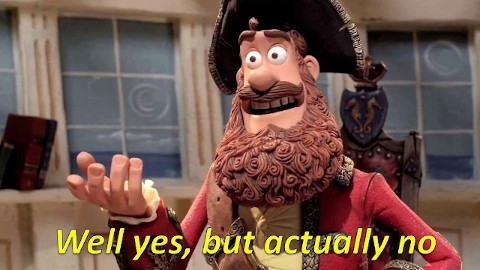
Curl noise is a variant of Perlin noise, where instead of getting the scalar value of noise in the flow field, we use the curl operator on the noise to obtain a field that is guaranteed to be divergence-free… yeah, nevermind that, I’ll put it into human language again.
Let’s ponder on flow fields, the correlation between particle positions and their velocites, once more. We have another trait to describe these fields, aside from divergence. This other trait is the curl of a field. Though this is an oversimplification, curl can be thought of as “swirliness”. More specifically, it expresses how much the field tends to have local vortices (“swirls”) that spin around various spots and how large or intense those vortices are. Below are some images showcasing 2D vector fields with non-zero curl:
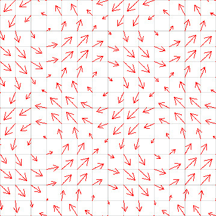 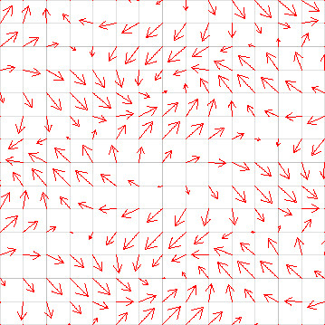
You can imagine that if we drop a particle into one of these fields and its velocity will be affected as shown by the vectors on the grid, it will be swirling around the field. By applying something known as the curl operator to a function taking a vector input (such as positional coordinates), we end up with a new vector field. This new field is guaranteed to have no “sinkholes” (i.e. is divergence-free), thus the particles will exhibit a swirling motion instead of the accumulating motion we have witnessed earlier.
And now coming back to curl noise - it’s simply a form of noise derived from ordinary Perlin noise by applying the curl operator to the noise function (to be precise, the gradient of the noise function for all you poindexters going ackchually…). This derived noise, instead of giving a single (scalar) float value, returns a vector corresponding to the given input. The flow field resulting from this will be divergence-free (no “sinkholes”). Below is a comparison between the normal 2D perlin noise output on the left and on the right, curl noise with some of the resulting vectors overlayed on top (there are infinitely many vectors, each corresponding to a point on the graphic, so it’s obviously impossible to show all of them at once):
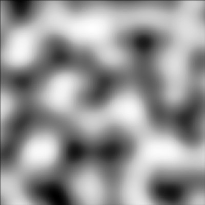 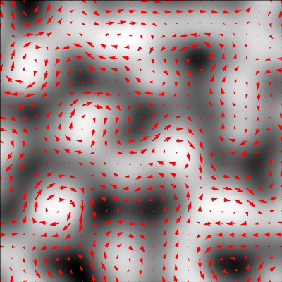
Of course, you didn’t sign up for a math lecture. Alright… let’s study an example script with curl noise, to see what this new type of noise even looks like, shall we?
Curl noise, unlike normal Perlin noise, actually does return a vector (either 2D or 3D, depending on the number of inputs received). We can then apply the result of the curl noise function directly to particle velocity, or optionally multiply it by some amount first. We will demonstrate a 2D case with screen-space particles (remember those?) and a 3D case with normal, world-space particles.
Here are the screen particles with 2D curl noise:
And world particles with 3D curl noise:
Woaaaah! This swirly motion… it’s hypnotizing to watch, isn’t it?
Let’s do one extra modification and add a constant velocity value on top of the curl noise vector to one of the axes:
And it looks almost like the particles are pushed around by gusts of wind or the current of a river! Not quite the same appearance as ordinary perlin noise, yet somehow it looks even more organic, quite reminiscent of flowing air or water. This is not a coincidence – the motion of most fluids encountered in daily life, like water or air (yes, gasses are also fluids) is mathematically described in terms of divergence-free (or incompressible) flow fields. That lack of divergence leaves room for curl to do its swirly magic instead. Pretty cool, huh?
I can show you something even cooler. Usually, these vortices in flowing fluids do not remain indefinitely in one spot, but they migrate over time. Migrating vortices can be accomplished with a slowly incrementing offset from the main input parameter(s). A call to getGameTick() can provide a suitable time-based offset. It can be multiplied to change the size of the increments per each frame (reminder: 30 fps means an increase of 30 per second in game). We can add this offset to one, two or all of the input coordinates, shifting the position of the vortices by a fixed amount each frame:
But wait, I’m not finished yet! Vortices in fluids don’t exist forever after forming, but they usually die down in one spot and form in a new spot. How can this kind of effect be achieved? With a related function, CurlWithTime(). It takes an extra input argument the time factor, that affects the distribution of vortices over time. Again, we can just plug in the rescaled game tick value into this field, to experience fluctuations of vortices forming and vanishing over time:
Okay okay, I’m done nerding out on you. We have learned about yet another type of noise and its unique characteristics, which allows for adding realistic turbulence to particle motion. Perhaps to simulate wind and/or water currents and the like.
Perlin noise in its various forms is an incredibly useful and versatile tool in computer graphics and knowing how to use it effectively unlocks a wide variety of mesmerizing, intricate effects. It is important to note that there is no single “correct” way to use it, though. You can try many different kinds of inputs and use the output noise for several different purposes. By all means, you should experiment with it, you might arrive at some really cool results!
This wraps up the final chapter from the tutorial section of the plugin manual. It was undoubtedly one hell of a journey to get through all my dubious attempts at explaining the particle system. But hey, if in spite of that you’ve managed to get all the way to here, you deserve a proper pat on the back! You’ve now earned the title of particle master and you may consider yourself as such. The particle system should hold no more secrets from you!
But we’re not done yet! We still have the Case Studies waiting for us, demonstrating how to put all this particle scripting knowledge to practical use. And of course, the tutorials did not cover every single feature offered by the particle system or the API, as that would take ages for me to write and you to get through. Again, the Particle Scripting API will fill you in on all of the other functions, objects and features, that were left out of the tutorials, but are available in the particle system. Navigating and studying the API after having the groundwork established by these tutorials should not pose any problem to you whatsoever.
| <<< PREV | NEXT >>> |